Schneeberichte · Alpen
Alpen: Schnee-Check für Samstag, 21. November: 14 von 14 Gebieten in der Schweiz sind oben weiß, am meisten liegt in Zermatt (60 cm).
Schnee nach Ländern heute
Die weißesten Länder heute: Österreich (99 %), Slowenien (95 %) und Schweiz (73 %).
Am meisten Neuschnee in der kommenden Woche: Frankreich (3 cm), Österreich (3 cm) und Italien (3 cm).
| Land | Weiß | Schneereichstes Skigebiet | Nächste 7 Tage |
|---|---|---|---|
| Österreich | 99 % | Stubaier Gletscher · 72 cm | 3 cm |
| Slowenien | 95 % | Sella Nevea · 56 cm | 2 cm |
| Schweiz | 73 % | Les Marecottes · 98 cm | 2 cm |
| Deutschland | 41 % | Zugspitze · 86 cm | 2 cm |
| Italien | 36 % | Courmayeur · 75 cm | 3 cm |
| Frankreich | 24 % | La Grave · 158 cm | 3 cm |
Schnee heute in den großen Skigebieten
- La Grave · 158 cm
- Orelle · 146 cm
- Val Thorens · 146 cm
- Val Thorens · 142 cm
- Les Deux Alpes · 120 cm
- Alpe d'Huez Grand Domaine · 113 cm
- Zugspitze · 86 cm
- Les Arcs · 84 cm
- Le Grand Domaine · 83 cm
- Bonneval-sur-Arc · 82 cm
- Espace Haute Maurienne Vanoise · 80 cm
- Les Grands Montets · 80 cm
- La Rosière · 78 cm
- Les Trois Vallées · 77 cm
- Courmayeur · 75 cm
- Glacier 3000 · 74 cm
- Paradiski · 73 cm
- La Thuile ski · 72 cm
- Les Ménuires · 72 cm
- Stubaier Gletscher · 72 cm
- Brévent/Flégère (Chamonix) · 70 cm
- Anzère · 69 cm
- Ovronnaz · 68 cm
- Arêches Beaufort · 66 cm
Schweiz: Wo fällt bis 24. November der meiste Neuschnee? Bis zu 59 cm in Verbier

Schnee-Check für Samstag, 21. November: 14 von 14 Gebieten in der Schweiz sind oben weiß, am meisten liegt in Zermatt (60 cm).
Neuschnee im Anmarsch
Bis 24. November sagt die Vorhersage Verbier 59 cm, Crans-Montana 58 cm und Engelberg-Titlis 51 cm.


14 Schweizer Skigebiete am 23. November erfasst; Zermatt führt mit 63 cm Schneetiefe an, bis 26. November werden 29 cm mehr prognostiziert.
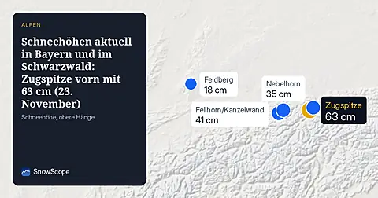
Zugspitze ist mit 63 cm am 23. November führend. Neun Skigebiete haben Schnee; in drei Tagen fielen am Nebelhorn 34 cm.

Zwölf bekannte Alpenskigebiete nach ihrer üblichen Dezember-Schneehöhe an der Mittelstation und am Gipfel gereiht, aus 46 vergangenen Wintern, mit dem Boden eines schwachen Dezembers und den Wochen, die nie enttäuschen.

Bis 25. November werden 64 cm Neuschnee am Jungfraujoch Snow Fun Park erwartet. Daten vom 22. November.

Lech/Zürs führt mit 47 cm Mächtigkeit und 46 cm Neuschnee in 72 Stunden an. Alle 11 Skigebiete haben Schnee. Daten vom 22. November.


Schneelagebericht für 20. November: Fellhorn/Kanzelwand führt Bayern mit 44 cm an, gestützt durch 35 cm Neuschnee in drei Tagen.

Les Arcs führt mit 166 cm in den oberen Höhenlagen an. Schneefall bis Sonntag. Die besten Pisten sind hoch und nordausgerichtet. Daten vom 20. November.

Alpine Tagespässe ab 36 EUR: neun Skigebiete im Vergleich nach Preis, Pistenkilometern und dem Schnee, den sie normalerweise bieten, um den besten Skitag für dein Geld zu finden.

Gletscherskifahren ab 68 EUR am Tag: Wir haben sieben Gletscher in Frankreich, Österreich, Deutschland und der Schweiz nach Preis und nach dem Schnee verglichen, den sie im Dezember normalerweise bieten.

Sechs Tage Skifahren ab 191 EUR: Wir haben zehn günstige Skiwochen in Europa nach Preis sortiert und dann 46 vergangene Winter geprüft, um zu sehen, wo der Schnee zuverlässig ist.

Von 20 EUR am Eröffnungswochenende bis zu 6-Tages-Pässen vor Weihnachten: ein Kalender der günstigsten Saisonstart-Angebote in den Alpen für 2026, mit dem Schnee, den du dabei erwarten kannst.

Zermatt hat heute in den oberen Höhen 47 cm, 690% über dem November-Median. Die 0°C-Grenze bleibt bis Freitag über 2.200 m.
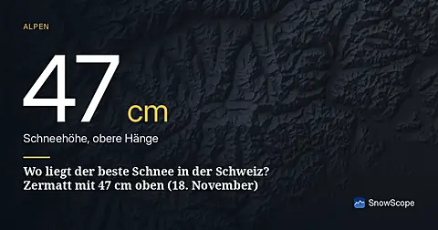
Schneebericht für 18. November: Zermatt führt die Schweizer Skigebiete mit 47 cm in den Höhenlagen an. Neuschnee erreicht die Alpen.

Alpen-Schneeprognose 18. November: 110 cm erwartet in Orelle, 105 cm in Les Grands Montets. Bester Schnee kommt Donnerstag und Freitag.


Krvavec auf Mittelhöhe hat am 15. Dezember in 46 Wintern typisch 13 cm Schnee, aber in 11 davon blanken Boden. Tagesticket EUR 47.

Skifahre auf 157 km markierten Pisten in Serre Chevalier, wo die Bergspitze bis Mitte Dezember eine 100 %ige Schneewahrscheinlichkeit hat.
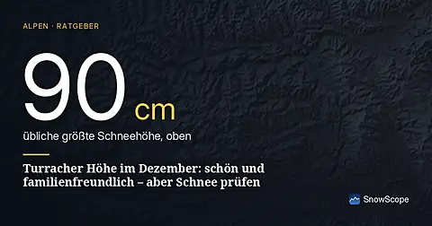
Turracher Höhe hat am 15. Dezember typischerweise 23 cm in der Mittellage, doch nur 39% der Winter erreichen dort Mitte Dezember 30 cm. Daten vom 13. November 2026.
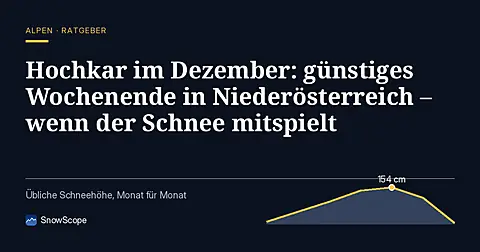
Hochkar auf Mittelhöhe hat am typischen 15. Dezember 38 cm, und in 63 % der Winter gab es in dieser Woche 30 cm oder mehr. Tageskarten ab EUR 32,90 an ruhigen Tagen.

Zehn europäische Skigebiete im Ranking für den Dezember, angeführt von Les 2 Alpes mit 75 cm Schnee auf mittlerer Höhe.
Orcières Merlette bietet eine hohe Basis auf 1.826 m und einen 6-Tage-Pass ab 227 EUR, was es zu einer zuverlässigen Wahl für einen Skiurlaub im Dezember macht.

Lohnt sich Alpe d'Huez für Dezember 2026? Wir prüfen die Schneechancen, den Startpreis von 58,00 EUR und vergleichen es mit Les 2 Alpes.

Sloweniens Skipässe sind die günstigsten (Krvavec 205 EUR für 6 Tage), doch Naturschnee im Dezember ist dort selten; Lachtal, Hochkar und Mölltaler Gletscher schneiden besser ab.
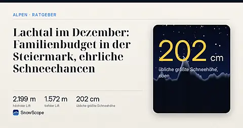
Lachtal kostet EUR 62 pro Tag, Kinder unter 7 Jahren fahren kostenlos. Die Mittelbahn hatte ab Dezembermitte in 72 % der Jahre 30 cm oder mehr. Schneehöhe vom 13. November 2026.

Fahre diesen Dezember auf den 131 km Pisten der Forêt Blanche mit einem 6-Tage-Pass für 298 EUR.

Bei Monterosa Ski kostet der Tagespass online 40,00 bis 71,00 EUR. Im Dezember liegt der Schnee oben: üblich 124 cm auf 3.030 m, 6 cm auf 1.207 m.

Am 15. Dezember auf Fellhorn/Kanzelwand: 63 cm auf 1965 m Gipfel, 30 cm am Berg, nur 10 cm auf 918 m Tal. Plane entsprechend.

Plane deinen Dezember-Trip 2026 nach Les Orres, indem du die wöchentlichen Skipasspreise mit unserer Schneehistorie aus 46 vergangenen Wintern vergleichst.

Pitztaler Gletscher hält Dezemberschnee besser als die meisten Alpengebiete: 87 cm auf Mittelstufe Mitte Dezember, jeder Winter der letzten Jahre über 30 cm. Datenstand 13. November 2026.
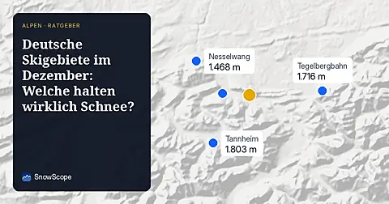
Nur Zugspitze und oberes Fellhorn halten zuverlässig 30 cm bis Mitte Dezember. Tiefere bayerische Berge sind günstiger, aber viel unsicherer. Daten vom 13. November 2026.

Puy-Saint-Vincent bietet einen 44 EUR Erwachsenen-Tagespass und soliden Dezember-Schnee in der Höhe, hier im Vergleich zum großen Nachbarn Serre Chevalier.

Grimentz-Zinal bietet 71 km Pisten und verlässlichen Schneesicherheit in großer Höhe für Ihre Dezember-Reise, mit 6-Tages-Pässen für CHF 339,00.

Österreich vor Weihnachten: Galtür 258 EUR und Kühtai 269 EUR für 6 Tage, mit 30 cm in über 90 % der Winter; Gletscher kosten mehr, kleine Hügel sind ein Risiko.

Wir bewerten französische Skigebiete nach der Schneewahrscheinlichkeit im Dezember und den Skipasspreisen, beginnend bei 36,00 EUR für einen Tagespass für Erwachsene in Les Karellis.

Galtürs Mittelstation hält am typischen 15. Dezember 55 cm. Nebensaison-Skipässe kosten EUR 55,50 bis 18. Dezember. Daten aus 46 Wintern, 1980–81 bis 2025–26.

Am 15. Dezember hat Hintertux auf 3245 m 98 cm Schnee in 46 Wintern Geschichte. Jeden Winter gab es in der Woche vor Weihnachten dort oben 30 cm oder mehr.

Vergleiche die Schneechancen im Dezember und geprüfte Skipasspreise ab 40,00 EUR in italienischen Skigebieten für deinen Wochenendtrip mit dem Auto.

Kühtais Basis auf 1939 m bleibt im Dezember zuverlässig schneesicher. Am 15. Dezember typischerweise 60 cm in der Basis, 72 cm auf Mittelhöhe, 112 cm oben. Nebensaison-Sechstagespass EUR 269 bis 18. Dezember.

Les 2 Alpes reicht bis auf 3.511 m für viel Schnee im Dezember 2026, mit einem 6-Tage-Skipass für Erwachsene für 266,50 EUR.

Les Karellis bietet 45 km Pisten und einen 6-Tage-Skipass für Erwachsene für 191,00 EUR mit einer 98 %igen Schneewahrscheinlichkeit auf mittlerer Höhe Ende Dezember.

Fahr Ski in Livigno für 51,50 EUR pro Tag vor dem 18. Dezember, wenn der Schnee am Gipfel in 100 % der vergangenen Winter 30 cm erreicht.

Montgenèvre hat im Dezember üblicherweise 56 cm Schnee an der Talstation und bietet Wochenendfahrern damit eine bessere Schneelage als Sestriere auf der anderen Seite der Grenze.

Skifahren in Obertauern im Dezember: 43 cm an einem typischen 15. Dezember an der Mittelstation, 6-Tage-Skipass vor Weihnachten 331 EUR.
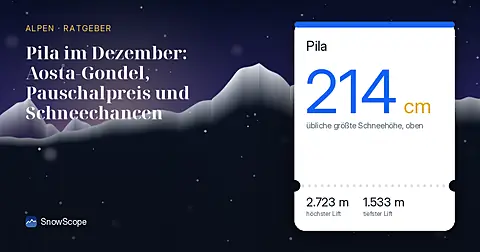
Pila oberhalb von Aosta bietet einen günstigen Tagesskipass für 60,00 EUR und zuverlässigen Schnee im Dezember auf den oberen Pisten.

Die Lifte in Saas-Fee erreichen 3.556 m, wo unsere Schnee-Historie zeigt, dass 100 % der vergangenen Winter bis Mitte Dezember mindestens 30 cm Schnee hatten.

Entdecke die ruhigen Pisten von St-Luc Chandolin, wo die Schneehöhe auf mittlerer Höhe in 98 % der Winter Ende Dezember 30 cm erreicht.

Valloire-Valmeinier bietet 131 km Pisten und eine 98 % Chance auf 30 cm Schnee auf halber Höhe bis Mitte Dezember.
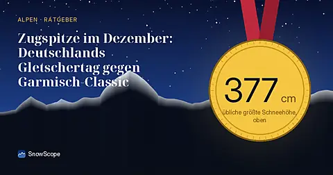
Zugspitze-Gletscher hat am 15. Dezember typischerweise 122 cm Schnee auf 2.627 m; Garmisch-Classic-Spitze 57 cm. Gleicher Preis, unterschiedliche Schneedecke. Daten aus 46 Wintern.
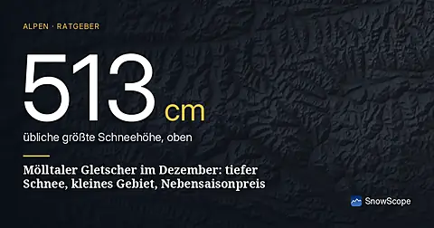
Mölltaler Gletscher im Dezember: 66 cm am tiefsten Lift (2103 m) und 128 cm an der Mittelstation an einem typischen 15. Dezember; 6-Tage-Skipass Nebensaison 332 EUR.

Kannst du dich als vorsichtiger Anfänger im Dezember auf Courmayeur verlassen, wenn es auf halber Höhe in unseren vergangenen Wintern im Schnitt 60 cm Schnee gibt?

Schneebericht in den Alpen, 14. November. Wenn du heute den meisten Schnee in den Alpen willst, schau nach Saint-Luc (Schweiz): etwa 110 cm weit …

Der Pistenplan von Sillian (Hochpustertal) mit unserer Schneeschicht am 13. November 2026: 8,6 cm am Gipfel auf 2399 m, untere Hänge aper, und eine Woche mit Regen und Schnee gemischt, Schneefallgrenze bei 1.800 bis 2.000 m.

Schneelage in Silvretta Montafon am 13. November 2026: 4,5 cm am Gipfel auf 2421 m, Mittelstation und Tal noch aper, diese Woche rund 40 cm in der Höhe, im Tal Regen unter 1.500 m.

Schneebericht Lech Zürs am 13. November 2026: rund 6 cm oben (2436 m) und an der Mittelstation, aper in Lech auf 1430 m. Diese Woche oben 42 cm nach unserer Prognose, bis 91 cm nach anderen, Regen und Schnee gemischt um 1400 m. Und warum Lech die schneereiche Seite des Arlbergs ist.

Was du anziehst, was du einpackst und wann du fährst, Skigebiet für Skigebiet. …

St Anton hat am 13. November 1 cm an der Spitze und 5 cm auf Mittelhang. Die kommende Woche bringt 33 bis 42 cm, aber Regen im Tal.

Die Schneefläche ist von 39.090 km² am 11. November auf heute 76.100 km² gewachsen, und unsere Prognose ergibt 57.910 km² am 16. November: Mehr Boden …

Schneebericht Obergurgl am 13. November 2026: rund 20 cm oben (3024 m), 5 cm an der Mittelstation, schneefrei an den untersten Liften (1784 m). Schneeprognose der Woche: 34 cm oben, 21 cm unten, Schneefallgrenze um 1700 m. Dazu der übliche Saisonstart.

Die Schneehöhe in Sölden am 13. November 2026: rund 9 cm oben auf 3245 m, 5 cm an der Mittelstation, nichts im Tal auf 1346 m. Diese Woche 25 cm oben, Regen unter etwa 1620 m. Gletscher gegen Dorf, dazu 46 vergangene Winter.

Die Schneehöhe in Chamonix am 13. November 2026, Höhe für Höhe: nichts im Talboden, 1 cm auf 2001 m, 12 cm oben am Brévent-Flégère (2486 m), 5 bis 24 cm oben an den Grands Montets (2768 m). Rund ein Meter in der Höhe diese Woche erwartet, Regen im Tal. Wie tief es in Chamonix üblicherweise wird, aus 46 Wintern.
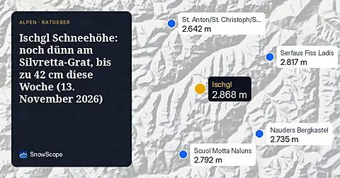
Schneehöhe in Ischgl am 13. November 2026: rund 5 cm oben (2868 m), 4 cm an der Mittelstation, nichts im Tal auf 1352 m. Diese Woche bis zu 42 cm am Grat, im Paznaun Regen unter etwa 1570 m. Dazu Tal und Grat in 46 vergangenen Wintern.

Schneebericht Les Menuires vom 13. November 2026: 28 cm am Gipfel (2838 m), nichts liegt auf 2112 m oder 1386 m. Etwa 80 cm am Gipfel in sieben Tagen erwartet, Schneefallgrenze um 1500 bis 1700 m. Warum Val Thorens, 450 m höher im selben Tal, schon mehr hat.

Neuschnee in La Grave: 61 cm in den letzten 72 Stunden, davon 3 cm in den letzten 24. Unser Schneemodell sieht jetzt etwa 78 cm in den oberen Hängen. …


In 24 von 46 Wintern hatten die Skigebiete auf der italienischen und südfranzösischen Seite der Alpen einen relativ stärkeren Winter als die Nordseite. Die Grafik, die großen Jahre und das Wetter dahinter.

Schnee im Dezember hängt vor allem von der Höhe ab. 46 vergangene Winter in 676 Alpen-Skigebieten zeigen, wie viel Schnee am 1., 15. und 22. Dezember zu erwarten ist, von unter 1.200 m bis über 2.400 m.
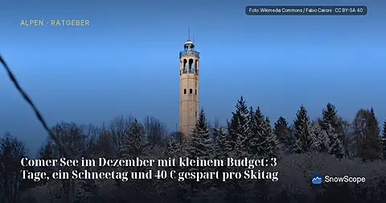
Ein günstiger 3-Tage-Plan am Comer See im Dezember mit echten Preisen 2026-27: Züge, Schiffe, Standseilbahn und ein Skitag in Piani di Bobbio oder Madesimo, die Ersparnis gegenüber Cortina und die Chance auf Schnee zu Weihnachten.
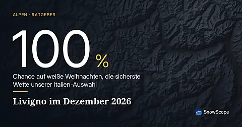
Der Schnee heute in Livigno, was die europäische Saisonprognose für den Dezember sagt, und warum die Höhe zu Weihnachten gegen einen milden Monat gewinnt.

Schnee heute in Cortina, die europäische Saisonprognose für Dezember und unsere Chancen auf weiße Weihnachten in den östlichen Dolomiten.
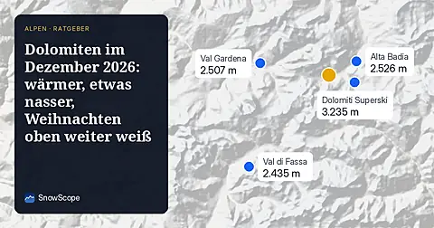
Dolomiten-Vorhersage für Dezember 2026: 1,7 °C wärmer, etwas feuchter, 30 cm Schnee bis Jahresende, Weihnachten in der Mittelhöhe weiß. Daten vom 10. November.
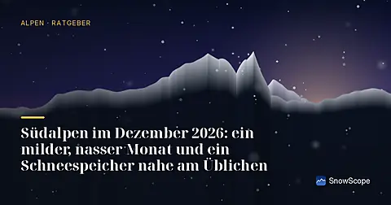
Der Dezember in den Südalpen wird wärmer und nasser als üblich, aber die Schneehöhe zum Jahresende sollte nahe am Normalwert bleiben. SnowScope-Analyse vom 11. November 2026.

Chamonix startet den Dezember mit 27 cm in der Höhe, aber dünne Schneedecke darunter. Wärme und Nässe drücken gegeneinander; erwarten Sie nahezu normalen Dezemberschnee. Daten vom 10. November 2026.

Zermatt in Zahlen: wo der Schnee hält, die sichersten Monate und die Anreise ins autofreie Dorf, aus 46 vergangenen Wintern.

Ist Verbier etwas für Anfänger? Wann ist der Schnee am besten? Wie kommt man hin? Antworten zu den 4 Vallées und 46 vergangenen Wintern.

Die Sellaronda ab Wolkenstein (Sëlva) in Gröden: Grödner Joch, Campolongo, Pordoi und Sellajoch der Reihe nach, mit unserer Schneehistorie von 46 vergangenen Wintern.

Val d'Isère und der Espace Killy für Anfänger, Fortgeschrittene und Könner, mit dem Schnee aus 46 Wintern auf drei Höhen.

Kitzbühel ist berühmt und tief gelegen. Was 46 vergangene Winter über den Schnee auf 762 m, 1.377 m und 1.993 m sagen, was sich geändert hat und welche Wochen die sicherere Wahl sind.
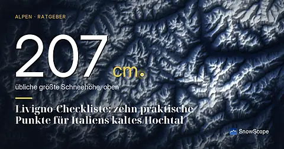
Zehn praktische Punkte für eine Skireise nach Livigno: Anreise, Kälte, zollfreie Geschäfte, die zwei Talseiten und die beste Schneezeit, aus 46 vergangenen Wintern unserer Schneehistorie.

Les Arcs hat vier Dörfer in verschiedenen Höhen, jedes mit eigener Schneelage und Charakter. Wähle das Richtige für deinen Winter.
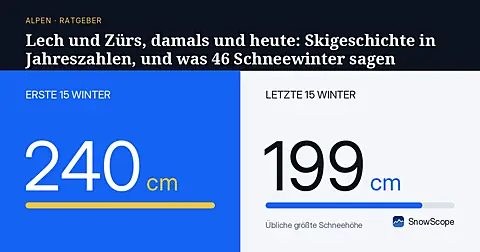
Von den Walsern zum Weißen Ring: die Daten, die Lech Zürs geprägt haben, danach unsere Schneehistorie damals und heute, die ersten fünfzehn von 46 vergangenen Wintern gegen die letzten fünfzehn.

Was an La Grave stimmt, dem Freeride-Berg unter der Meije: Gelände, Sicherheit, Schnee pro Monat und Trend, aus 46 vergangenen Wintern.

Sieben Tage in der Silvretta Arena, einer nach dem anderen: wo der Schnee liegt, wann man nach Samnaun fährt und was 46 vergangene Winter über Ischgls Schnee auf drei Höhen sagen.

Saas-Fee liegt auf 1.780 m in einem autofreien Dorf. Du erreichst es mit dem Zug nach Visp und dann PostBus 511, oder du fährst über Lötschberg, Furka, Simplon oder das Rhônetal. Daten vom 8. November 2026.

Alpe d'Huez liegt zur Sonne. So plant man den Tag nach Uhrzeit und Höhe, mit dem Schnee von 46 vergangenen Wintern von den tiefen Dörfern bis zum Pic Blanc.

Unsere 46-Winter-Reihe in den Alpen, 108 Punkte von 667 bis 3.872 m: überall weniger Schneetage, deutlich an 81 %. Was sich je Höhe änderte und warum.

Bonneval-sur-Arc liegt auf 1.794 m im hohen Arc-Tal, im Winter durch den Iseran abgeschnitten. Die Schneehöhe reicht von 99 cm in der Talstation bis 335 cm am Berg. Daten aus 46 vergangenen Wintern, November 2026.

So verbringst du den ersten Skitag in Chamonix, von den Grands Montets über Argentière bis zur richtigen Stunde für jeden Hang, mit 46 Wintern Schneedaten.

Cortina d'Ampezzo auf drei Arten: Tofana, Faloria-Cristallo und Cinque Torri-Lagazuoi, mit 46 Wintern Schneedaten auf drei Höhen.

Chantarella, Marguns, Piz Nair, White Turf: die Wörter, die man in St. Moritz hört, erklärt, und was 46 vergangene Winter unserer Schneehistorie zu jeder Höhe der Corviglia sagen.
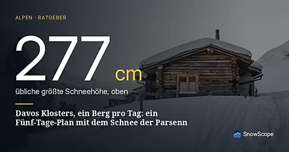
Davos und Klosters teilen sich sechs Skiberge. Ein Plan Tag für Tag, beginnend auf der Parsenn, mit dem, was 46 vergangene Winter unserer Schneehistorie über ihre Höhen sagen.

Wann Courchevel und die 3 Vallées buchen, welches Dorf wählen und wo der Schnee hält, geplant aus 46 vergangenen Wintern.

St. Anton und Ski Arlberg durch den Winter: die übliche Schneehöhe pro Monat auf drei Höhen, aus 46 vergangenen Wintern.

Ein Schneejahr in Sölden, Phase für Phase: wann die Gletscher weiß werden, das Weltcup-Wochenende, die lange Wintermitte und die Frühjahrswochen, aus 46 vergangenen Wintern auf drei Höhen.

Drei Arten, einen Tag ab Méribel zu verbringen: nach Osten nach Courchevel, nach Süden Richtung Val Thorens oder daheim am Mont Vallon, mit dem Schnee von 46 vergangenen Wintern auf drei Höhen.

Schneefallgrenze-Vorhersage 2.190–2.850 m vom 8.–10. November. Oberhänge bekommen Schnee; Täler bleiben nass. Daten vom 7. November.